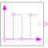

PulseGenerate pulse signal of type Boolean |

|
Information
This information is part of the Modelica Standard Library maintained by the Modelica Association.
The block is similar to the block in Modelica.Blocks.Sources.BooleanPulse, but adapted to work in clocked partitions (by internal sampling of the continuous time variable).
The Boolean output y is a pulse signal:

Example
See model Modelica.Clocked.Examples.Elementary.BooleanSignals.TimeBasedPulse.
Parameters (3)
Connectors (1)
| y |
Type: BooleanOutput Description: Connector of clocked, Real output signal |
|---|
Used in Examples (1)
|
Modelica.Clocked.Examples.Elementary.BooleanSignals Example of using the clocked simulation time based Boolean Pulse source block |